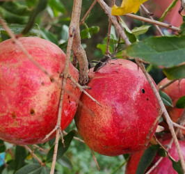
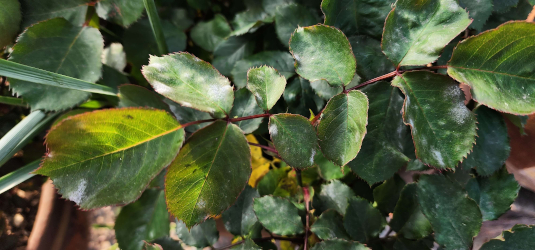

Types of Pests

Pests are something that every gardener will experience eventually, it's par for the course. Pests can range from insects
and disease to animals such as birds and rabbits. There are many ways to keeps pests away and treat your garden to prevent them.
There are many methods to treat many are natual but most common methods involve pesticides and other chemicals. What you use will depend on your preference.
Damage by pests

The damage that pests can cause varies on the variety of pest in question. Most eat the plants or fruit directly but some are more discreet.
Diseases in plants can be caused by either bacteria spread by insects or by fungus which attacks a vital part of a plant.
Probably the worst kind of disease that affects gardens is fungi which can range from mildew to black spot disease.